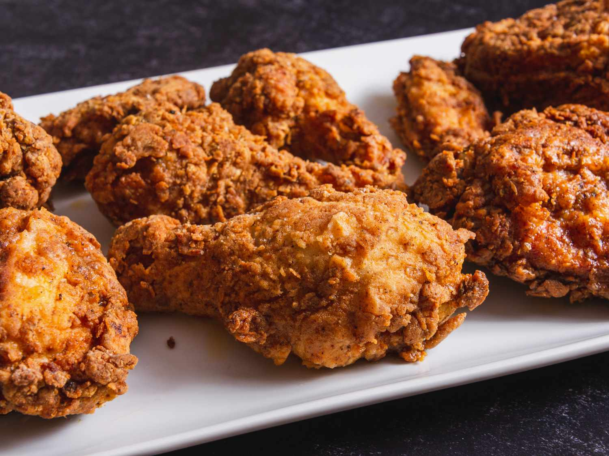

Baskbetball
I love basketball, whenvever I am bored I play basketball. Playing basketball helps me forget about my problems, . Ever since I was a kid ive been playing basketball. When I was seven years old my dad introduced me to basketball, back in the Philippines I would watch him play basketball everyday. Golden State warriors and Lakers are my favorite professional baskbetall team to watch. They have unique styles of their own that makes them fun to watch.
Favorite Food
When Im very hungry I crave for any type of chicken as long as its crispy and juicy. I mostly order chicken from fast foods such as kfc, mcdonalds, jolibee, seven eleven and wendys. Once in a while I cook frozen chicken things from walmart. One of the best way to bulk is to eat fried chicken, It provides 13.4 grams of protein it is easy and quick to eat if u wanna bulk up fast, but eating too much causes heart diesease therefore keep track of how much you eat in a day.
Table
| Monday | Tuesday | Wednesday | Thursday | Friday | Saturday | Sunday | |
|---|---|---|---|---|---|---|---|
| Shoulders Day | Rest day | Overhead press and lateral raises | Overhead press and lateral raises | Leg day | Leg day | Back/Core day | Rest Day |
| Leg Day | Rest day | Shoulder day | Shoulder day | Leg curls and leg press | Leg curls and leg press | Back/Core day | Rest day |
| Back/Core Day | Rest day | Shoulder day | Shoulder day | Leg day | Leg day | Deadlift and russian twist | Rest day |